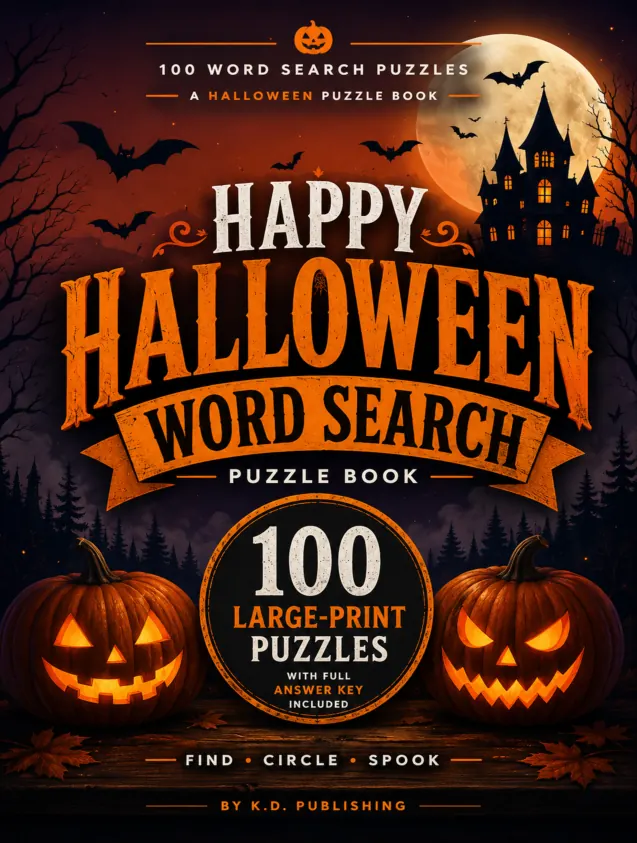
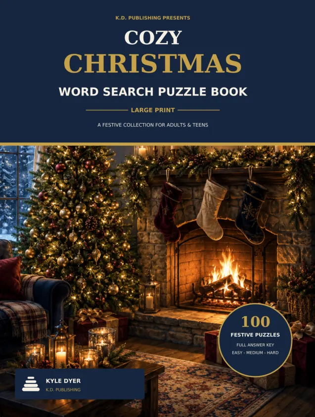
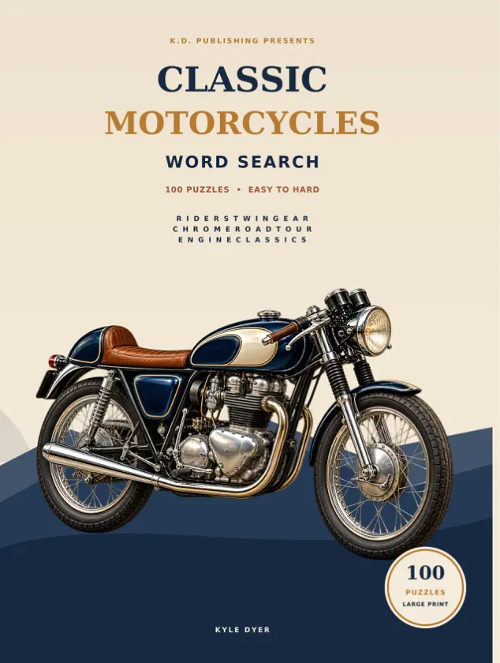
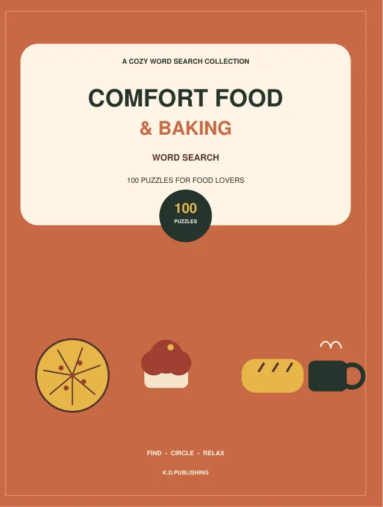
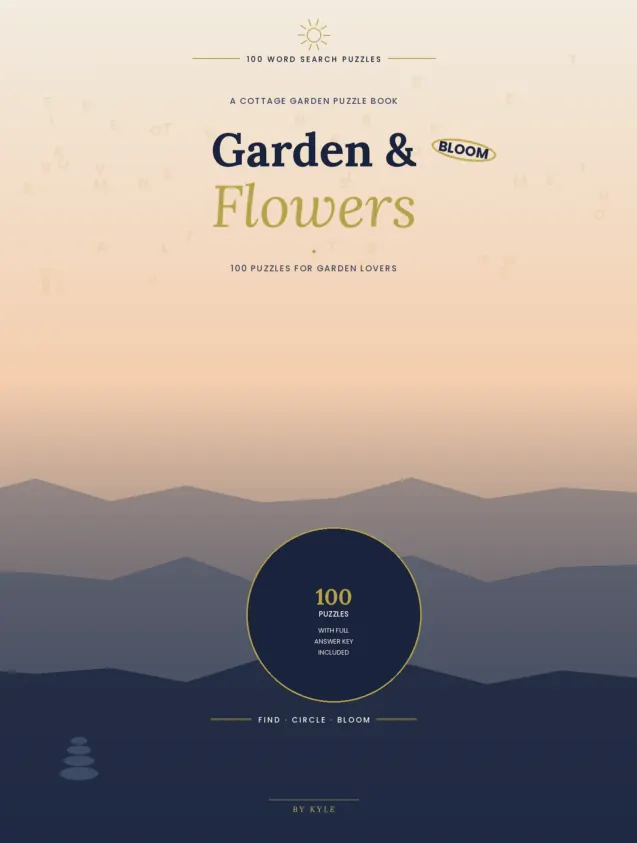
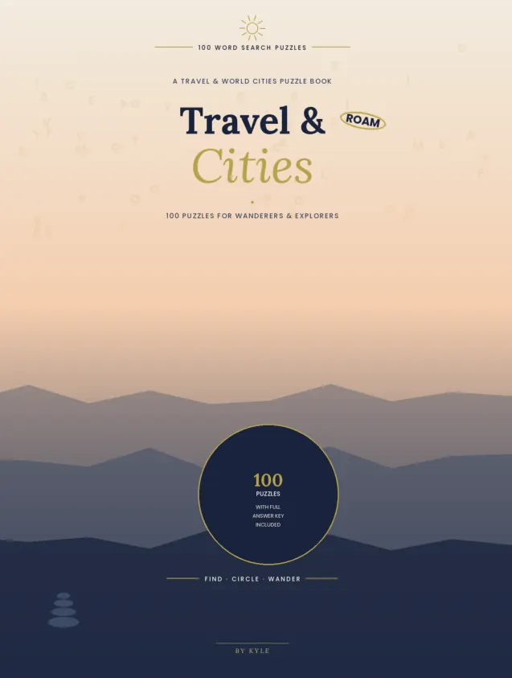
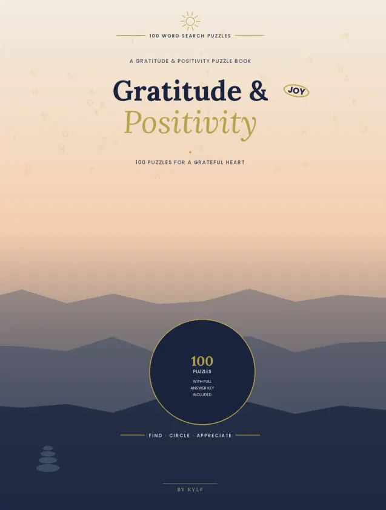

Books to explore
Browse by category, open a book and see genuine interior pages before visiting Amazon.

High Fantasy Realms
Explore castles, peaks and hidden cities through detailed fine-line fantasy colouring scenes.
See inside
British Nostalgia Word Search
A large-print word search collection around familiar moments from British life.
In reviewSee inside
Space & Stars
Word searches inspired by planets, galaxies and astronomy, with an answer key.
See inside
Nature & Wildlife
Outdoor-themed word searches covering animals, forests, birds and national parks.
See inside
U7 & U8 Season Planner
A guided season companion with weekly training sessions, match-day plans and space for coaching notes.
See inside
The First-Time U7 & U8 Football Coach
A practical guide for parents and volunteers coaching U7 and U8 grassroots football in England.
See inside
The 80-Day Sleep
A daily journal for reflecting on bedtime and sleep habits.
See inside
Ocean & Beach
Ocean, beach and sea-life themed word searches with an answer key.
See insideClassic Movies & Music
Film and music themed word searches, from movie nights to the golden age of Hollywood.
See insideWorld War 2 Word Search
Large-print word searches exploring World War II history and themes.
See inside
Calm & Mindfulness Word Search
Large-print word searches on calm and mindfulness themes, with an answer key.
See inside
Halloween Word Search
Spooky large-print word searches for Halloween, with an answer key.
See inside
Cozy Christmas Word Search
Festive word searches for cosy Christmas puzzle time, with an answer key.
See inside
Classic Motorcycles
A collection of classic motorcycle themed word searches.
See insideThe 80-Day Calm
A guided daily journal with prompts for calmer moments.
See insideThe 80-Day Self-Care
A daily journal for making space to reflect on self-care.
See insideThe 80-Day Gratitude
A guided journal for daily gratitude and reflection.
See inside
The 80-Day Confidence
A guided daily confidence journal with reflective prompts.
See insideThe 80-Day Mindfulness
A daily mindfulness journal with guided prompts and short practices.
See inside
Comfort Food & Baking
Baking, cooking and kitchen classics in a collection of word searches.
See inside
Garden & Flowers
Flowers, herbs and cottage gardening themes in word search form.
See inside
Travel & World Cities
Travel, cities, landmarks and geography themed word searches.
See inside
Gratitude & Positivity
Gratitude and positivity themed word searches with an answer key.
See inside